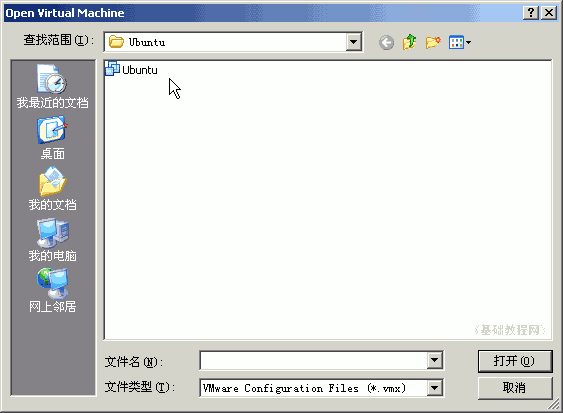
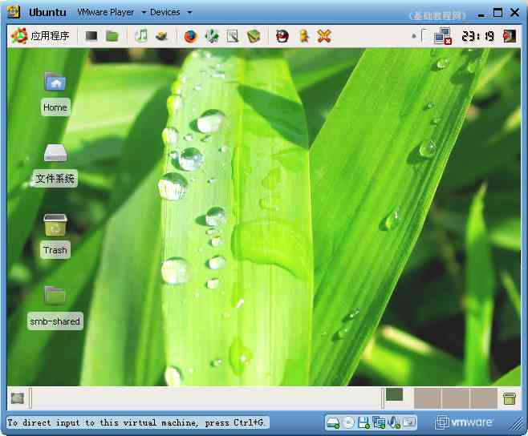

VMware 虚拟机基础入门教程
作者：TeliuTe 来源：基础教程网
八、VMware player播放器 返回目录VMware workstation虚拟机是商业软件，同时出品的还有VMware player虚拟机播放器，这是免费软件，可以用它来运行虚拟机文件，下面我们来看一个练习；
1、下载安装
1）可以到官方下载：http://www.vmware.com/download/player/ 需要填写一个申请表，
华军下载：http://www.onlinedown.net/soft/43447.htm
霏凡下载：http://www.crsky.com/soft/6384.html
2）下载以后得到一个压缩包，解压后得到一个安装文件；
；
3）双击运行安装程序，稍等出来对话框点击“next”继续下一步；
4）然后一直点“next”到“Finish”完成；
5）提示重启动，关闭其他窗口，点“Yes”重启动；
2、使用播放器
1）双击桌面上的VMplayer图标，打开播放器窗口；
2）首先出来的许可协议里选“Yes, I accept”同意，然后点“OK”确定；
3）在接下来的主窗口右边点“Open”按钮，打开一个虚拟机；

下面的Download是去下载一个现有的虚拟机文件，linux的虚拟机文件比较多；
4）找到一个虚拟机文件，点“打开”按钮，启动虚拟机进入系统；

5）虚拟机里的操作跟主机相同，关闭后自动退出播放器；
本节学习了VMwaer player播放器的基本操作，如果你成功地 完成了练习，请继续学习下一课内容；本教程由86团学校TeliuTe制作|著作权所有
基础教程网：http://teliute.org
美丽的校园……
转载和引用本站内容，请保留作者和本站链接。